- 데이터의 불확실성을 함께 보여주는 방법 중 하나로 오차 막대나 신뢰 구간을 사용합니다.
- 오차 막대는 데이터 하나 하나에 붙여서, 신뢰 구간은 전체적인 범위를 보여줍니다.
- matplotlib과 seaborn으로 불확실성을 도시하는 방법을 정리했습니다.
0. 데이터 생성
- 평균이 0이고 표준편차가 1인 데이터를 100개씩 21쌍을 만듭니다.
numpy.random.normal()를 이용해서 데이터 프레임으로 한번에 만들 수 있습니다.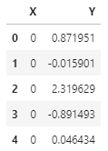1
2df_test = pd.DataFrame({"X":np.concatenate([[i]*100 for i in range(21)]), "Y":np.random.normal(size=2100)})
df_test.head()
- 데이터 100개씩의 평균과 표준편차를 구합니다.
- 로우 데이터와 별도의 데이터프레임이 하나 생겼습니다.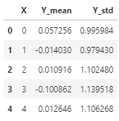
1
2
3
4df_gX_mean = df_test.groupby("X").mean().reset_index()
df_gX_std = df_test.groupby("X").std().reset_index()
df_gX = df_gX_mean.merge(df_gX_std, left_on="X", right_on="X", suffixes=("_mean", "_std"))
df_gX.head()
1. 오차 막대 error bar 그리기
matplotlib.pyplot.errorbar
matplotlib.axes.Axes.errorbar
seaborn.lineplot
- 오차 막대는 matplotlib의
errorbar명령으로 표현할 수 있습니다.
- 같은 데이터에 다른 옵션으로 그려봅니다.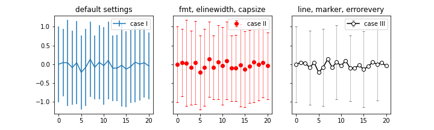
1
2
3
4
5
6
7
8
9
10
11
12
13
14
15
16fig, axs = plt.subplots(ncols=3, figsize=(10,3), sharex=True, sharey=True)
axs[0].errorbar(x=df_gX["X"], y=df_gX["Y_mean"], yerr=df_gX["Y_std"], label="case I")
axs[0].set_title("default settings")
axs[0].legend()
axs[1].errorbar(x=df_gX["X"], y=df_gX["Y_mean"], yerr=df_gX["Y_std"],
fmt="ro", elinewidth=0.5, capsize=2, label="case II")
axs[1].set_title("fmt, elinewith, capsize")
axs[1].legend(loc="upper right")
axs[2].errorbar(x=df_gX["X"], y=df_gX["Y_mean"], yerr=df_gX["Y_std"],
ls="none", marker="s", mec="k", mfc="w", elinewidth=0.5, capsize=2,
ecolor="magenta", errorevery=3, label="case III")
axs[2].set_title("ls, marker, ecolor, errorevery")
axs[2].legend(loc="upper right")
- Case I : 기본 설정
- line plot에 error bar가 line 형태로 붙어 있습니다.
- 간결해서 보기 좋기도 하지만 제 분야에서 일반적으로 쓰는 모양은 아니라 어색합니다.
Case II :
fmt,elinewidth,capsize- scatter plot에 error bar가 $\text{I}$자 형태로 붙어 있습니다.
fmt(format) 인자로 형태를 제어합니다.capsize로 error bar 모양을 $\text{I}$자로 만들어 익숙하게 합니다.- 평소에 자주 보는 형식이라 익숙합니다.
Case III : line(
ls,c), marker(marker,mec,mfc)- scatter + line plot에 error bar가 $\text{I}$ 형태로 붙어 있습니다.
- line과 marker를 별도로 제어합니다.
- 오차 막대가 너무 빼곡해서 보기 어려우면
errorevery로 제어할 수 있습니다. - 목적에 맞는 그래프로 만들 수 있습니다.
seaborn에서도
seaborn.lineplot()명령어를 이용해 오차 막대를 표현할 수 있습니다.- 그러나 사실상 matplotlib의 errorbar를 쓰는 것과 별반 다르지 않습니다.
err_kws인자에 dictionary 형식으로 error bar 관련 인자들을 집어넣어 줘야 하는데, 여기 사용되는 인자들이 seaborn 내부에서 matplotlib의errorbar()에 전달될 인자이기 때문입니다.- 바꿔 말하면 seaborn으로 그리려면 matplotlib으로 그릴 줄 알아야 한다는 뜻입니다.
2. 오차 밴드
- 데이터마다 오차 막대를 붙이는 대신 전체적으로 오차 범위를 밴드로 표시하기도 합니다.
- 다수의 선을 하나의 면으로 표현하기 때문에 시각적으로 덜 번잡하여 최근 많이 선호되는 방법입니다.
오차 막대는 표준 편차를 보여준다면, 오차 밴드는 신뢰 구간(ci: confidence interval)을 주로 표현합니다.
신뢰 구간은 표본으로 눈에 보이지 않는 모수를 추정할 때 얼마나 믿을 수 있을지를 표현합니다.
예를 들어 신뢰 구간이 95%라면 “표본을 20번 뽑았을 때 이 중 19번은 모집단의 모수를 포함할 것이다”라는 의미입니다.
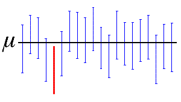신뢰 구간은 다음과 같이 Z-Score $Z$와 표본의 표준편차 $s$, 그리고 표본의 수 $n$에 따라 결정됩니다.
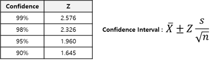
- 앞에서 만든 데이터를 오차 밴드로 표현해봅시다.
- maplotlib은
fill_between()을 사용합니다. - seaborn은
lineplot()을 사용합니다. - 두 라이브러리의 기본값이 다른 점에 유의해서 봅니다.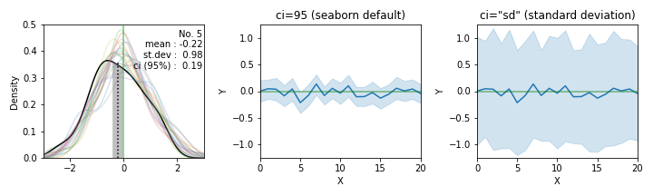
1
2
3
4
5
6
7
8
9
10
11
12
13
14
15
16
17
18
19
20
21
22
23
24
25
26
27
28
29
30
31
32
33
34
35
36
37
38
39
40cis = [95, "sd"]
font_title = {"fontsize":12}
titles = ["ci=95 (seaborn default)", "ci=\"sd\" (standard deviation)"]
fig, axs = plt.subplots(ncols=3, figsize=(10,3))
for ax, ci, title in zip(axs[1:], cis, titles[:2]):
sns.lineplot(x="X", y="Y", data=df_test, ci=ci, ax=ax)
ax.set_title(title, fontdict=font_title)
ax.axhline(0, c="green", alpha=0.5)
ax.set_xlim(0,20)
ax.set_ylim(-1.25, 1.25)
for i in range(21):
if i == 5:
color = "k"
alpha = 1
else:
color = f"C{i}"
alpha = 0.2
df_test.loc[100*i:100*(i+1), "Y"].plot.kde(ax=axs[0], c=color, legend=False, alpha=alpha, zorder=2)
axs[0].set_xlim(-3,3)
axs[0].set_ylim(0, 0.5)
if i == 5:
axs[0].axvline(0, c="green", alpha=0.5, zorder=3)
std = df_test.loc[100*i:100*(i+1), "Y"].std()
ci95 = 1.96 * std/np.sqrt(100)
mean = df_test.loc[100*i:100*(i+1), "Y"].mean()
line_mean = axs[0].plot([mean, mean], [0, 0.36], ":", c="k", label="no.7 mean", zorder=2.5)
# Line plot에서 데이터 가져오기
X_, Y_ = axs[0].get_lines()[i].get_data(orig=True)
axs[0].fill_between(X_[(X_ >= mean-ci95) & (X_ < mean+ci95)], Y_[(X_ >= mean-ci95) & (X_ < mean+ci95)], fc="gray", alpha=0.5, zorder=2.4)
fig.text(0.31, 0.65, f"No. {i}\nmean : {mean:0.2f}\nst.dev : {std:0.2f}\nci (95%) : {ci95:0.2f}", fontdict={"fontsize":10, "color":"k"}, ha="right") #, transform=ax.transAxes)
fig.tight_layout()
- maplotlib은
- 세 칸의 그림 중 맨 왼쪽에는 21쌍 데이터의 분포를
seaborn.kdeplot으로 그렸습니다.- 0을 중심으로 21개의 분포가 퍼져 있는 가운데 5번째 데이터를 굵게 그렸습니다.
- 평균이 -0.22로 크게 벗어나 있고, ci(95%)가 0.19입니다.
평균 참값 0이 ci (-0.41 ~ -0.03)안에 들어와 있지 않습니다. - kdeplot의 데이터를 가져오는데
.get_lines()와.get_data()를 사용했습니다.
관련 내용은 추후 기회가 되면 자세히 다루겠습니다.
- 가운데 그림에 21쌍 데이터의 평균과 ci를 연속적으로 표현했습니다.
- 21개 경우 중 한 가지 경우에서 모수의 평균을 제대로 추정하지 못했습니다.
- 확률로 95%에 가깝습니다. 그러나 21가지라는 제한적인 시도의 결과입니다.
여러 번 반복 수행하면 결과가 달라집니다. seaborn.lineplot()으로 그렸습니다. 기본적으로 ci를 보여줍니다.
- 맨 오른쪽에는 같은 데이터의 오차 범위를 표준 편차로 그렸습니다.
- 훨씬 넓어집니다.
- 정확히는 가운데 그림이 표준편차에 Z-Score와 표본의 수가 반영된 만큼 폭이 바뀐 것입니다.
matplotlib.fill_between()으로 그렸습니다.seaborn.lineplot()에ci="sd"로 넣으면 동일한 그림이 나타납니다.
3. 실제 데이터 적용
Ocean salinity: Climate change is also changing the water cycle
Cheng L., K. E. Trenberth, N. Gruber, J. P. Abraham, J. Fasullo, G. Li, M. E. Mann, X. Zhao, Jiang Zhu, 2020: Improved estimates of changes in upper ocean salinity and the hydrological cycle. Journal of Climate. In press, doi: https://doi.org/10.1175/JCLI-D-20-0366.1.
- 1960년 이후 해수의 염도 변화를 나타낸 그래프입니다.
- 데이터의 평균값과 표준편차로 나타낸 오차값이 표현되어 있습니다.
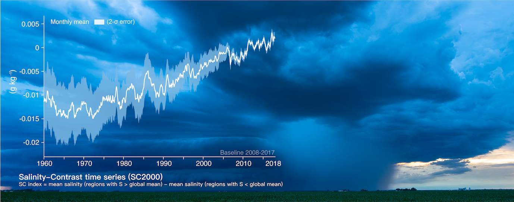
- 이 그림을 배경 사진을 제외하고 재현해 보겠습니다.
- 저자들이 올린 데이터를 형식만 수정하여 사용합니다.
- 여기에서 다운로드받을 수 있습니다.
1
2data = pd.read_csv("data_2000.txt")
data.head()
- 컬럼 이름이 너무 길어서 어렵습니다. 짧게 줄여줍시다.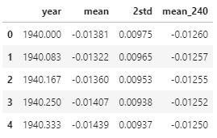
1
2
3
4cols_0 = data.columns
cols_1 = ["year", "mean", "2std", "mean_240"]
data = data.rename(columns=dict(zip(cols_0, cols_1)))
data.head()
3.1. Matplotlib으로 그리기
- 오차 범위로 사용할 데이터가 필요합니다.
- 평균에서 표준편차를 더하고 뺀 값을 추가해줍니다.
- 이 구간 사이를 오차범위로 도시할 것입니다.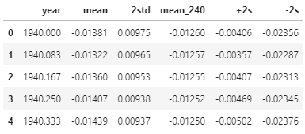
1
2
3data["+2s"] = data["mean"] + data["2std"]
data["-2s"] = data["mean"] - data["2std"]
data.head()
- 결과물을 먼저 보여드리겠습니다.
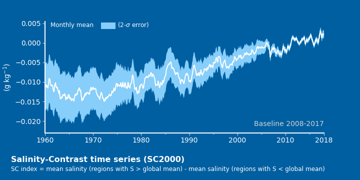
- 이렇게 그렸습니다.
- 배경색 :
fig.set_facecolor(),ax.set_facecolor()를 사용합니다. - 공간 분할 : 그래프 아래에 글자를 넣다가 layout이 망가지기 쉽습니다.
애초에 subplot을 위와 아래에 두 개 만들고 아래는 그래프 대신 글자를 넣으면 안정적입니다.
비대칭 공간 분할은gridspec_kw를 이용합니다. - 오차 밴드 : “+2s”와 “-2s” 사이를
fill_between()으로 채웁니다. - Legend :
ax.legend()대신ax.text()를 사용했습니다.
하늘색 사각형은patches.Rectangle()을ax.add_patch()했습니다. - labels 제외 글자들 :
ax.text()를 사용했습니다.
텍스트 위치를axes내부 상대좌표로 잡으면 편합니다.transform=ax.transAxes를 사용하면 됩니다. - 아래 글자 :
fig.text()를 사용했습니다.
그래프에 관계 없이 전체 그림을 보고 위치를 잡는 게 좋기 때문입니다.
- 배경색 :
3.2. Seaborn으로 그리기
seaborn.lineplot은 오차 범위가 필요하지 않습니다.- 해당 범위의 오차를 만드는 데이터가 필요합니다.
- 각 지점마다 1000개의 데이터를 주어진 오차에 따라 만들어 주었습니다.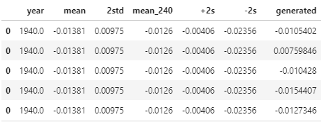
1
2
3
4
5
6
7
8
9
10from copy import deepcopy
def random(loc, scale, size=100):
return np.random.normal(loc=loc, scale=scale, size=[size]*loc.size)
data_ = deepcopy(data)
data_["generated"] = data_.apply(lambda x: random(x["mean"], x["2std"], 1000), axis=1)
data1 = data_.explode("generated")
data1["generated"] = data1["generated"].astype("float")
data1.head()
- 그러면, matplotlib과 똑같은 그래프를 그릴 수 있습니다.
3.3. Visualization code
- 소스 코드는 다음과 같습니다.
- matplotlib과 seaborn으로 그릴 때 각기 activate 하는 부분만 다릅니다.
1
2
3
4
5
6
7
8
9
10
11
12
13
14
15
16
17
18
19
20
21
22
23
24
25
26
27
28
29
30
31
32
33
34
35
36fig, axs = plt.subplots(nrows=2, figsize=(10,5), gridspec_kw={"height_ratios":[9,1]})
fig.set_facecolor("#005FA1")
axs[0].set_facecolor("#005FA1")
### matplotlib
# axs[0].fill_between(data["year"], data["+2s"], data["-2s"], fc="lightskyblue")
# axs[0].plot(data["year"], data["mean"], c="w", lw=2)
### seaborn
g = sns.lineplot(x="year", y="generated", data=data1, ci="sd", ax=axs[0], err_kws={"fc":"lightskyblue", "ec":"none", "alpha":1}, color="w", lw=2)
axs[0].spines["right"].set_visible(False)
axs[0].spines["top"].set_visible(False)
axs[0].spines["left"].set_linewidth(2)
axs[0].spines["left"].set_color("w")
axs[0].spines["bottom"].set_linewidth(2)
axs[0].spines["bottom"].set_color("w")
axs[0].set_xticks([1960, 1970, 1980, 1990, 2000, 2010, 2018])
axs[0].xaxis.set_minor_locator(MultipleLocator(5))
axs[0].tick_params(axis="both", which="major", length=5, color="w", labelsize=14, labelcolor="w")
axs[0].tick_params(which='minor', length=3, color='w')
axs[0].set_xlabel("")
axs[0].set_ylabel("(g kg$^{-1}$)", fontdict={"fontsize":14, "color":"w"})
axs[0].set_xlim(1960, 2018)
axs[0].set_ylim(-0.023, )
Rectangle = patches.Rectangle((0.2, 0.94), 0.05, 0.05, color="lightskyblue", transform=axs[0].transAxes)
axs[0].text(0.02, 0.95, "Monthly mean", fontdict={"fontsize":12, "color":"w"}, transform=axs[0].transAxes)
axs[0].add_patch(Rectangle)
axs[0].text(0.26, 0.95, "(2-$\sigma$ error)", fontdict={"fontsize":12, "color":"w"}, transform=axs[0].transAxes)
axs[0].text(1, 0.06, "Baseline 2008-2017", ha="right", transform=axs[0].transAxes, fontdict={"fontsize":14, "color":"lightgray"})
axs[1].axis("off")
fig.text(0.03, 0.1, "Salinity-Contrast time series (SC2000)", fontdict={"fontsize":16, "fontweight":"bold", "color":"w"})
fig.text(0.03, 0.05, "SC index = mean salinity (regions with S > global mean) - mean salinity (regions with S < global mean)", fontdict={"fontsize":12, "color":"w"})